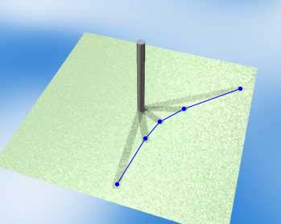

|
When the sun moves arround in the sky, the shadow
casted by a vertical stick moves on the ground. The
tip of the shadow traces some kind of curve.
The curve depends on the observation point, and it also depends on seasons.
|  |
|
Before looking at our applet, we recommend you to
think about the locus. What kind of curves under the following conditions?
|
|
The following site is excellent for sundial lovers. http://www.sundials.co.uk/ |